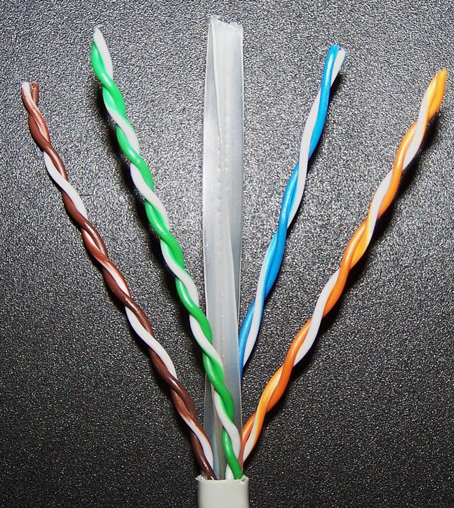
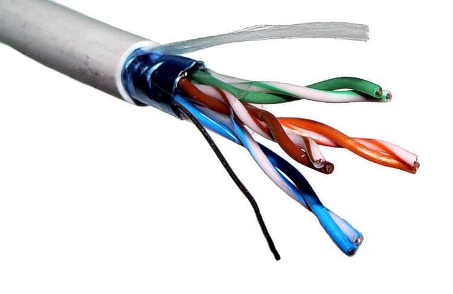
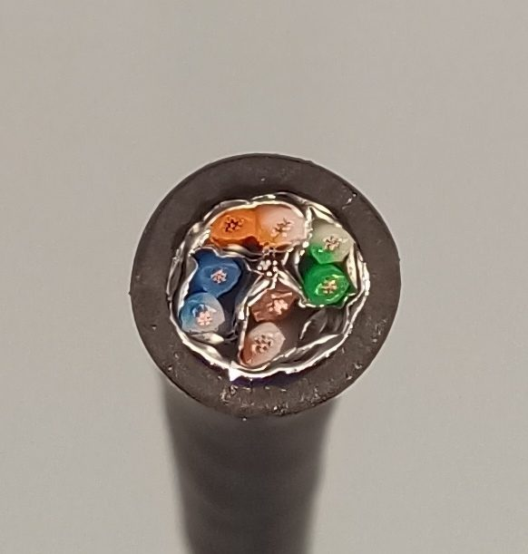
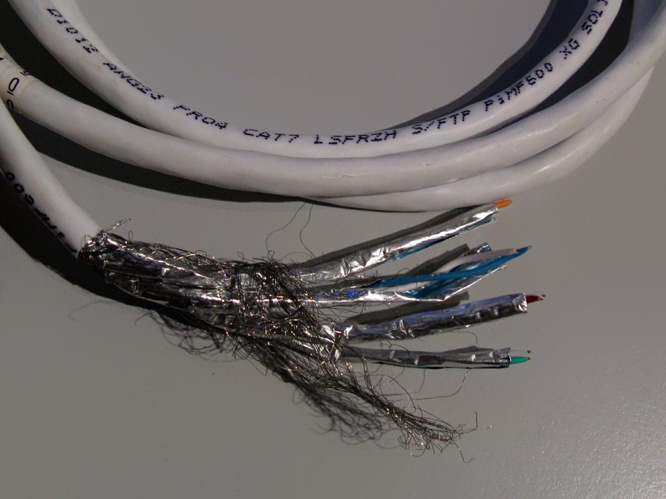

斜線前是「整體遮蔽」（包住全部 4 對），斜線後是「線對遮蔽」（每對各自包），最後的 TP 是雙絞線。U＝無遮蔽、F＝鋁箔、S＝編織網。看懂這個規則，就不會再被 FTP、STP 這些舊稱搞混。 Before the slash: overall screen. After: per-pair screen. U = none, F = foil, S = braid.
橘色標籤是這種結構市售常見的 Cat 等級。Cat 等級和遮蔽結構是兩個獨立的規格，但速率越高，遮蔽通常越完整：Cat 5e／6 以 U/UTP 為主；Cat 6A 在 500 MHz 外部串音變重要，常用遮蔽版；Cat 7／7A 每對必須鋁箔；Cat 8 全部是遮蔽線。實際以廠牌規格為準。
| 舊稱（市場俗名） | ISO/IEC 11801 代碼 | 說明 |
|---|---|---|
| UTP | U/UTP | 無遮蔽 |
| FTP、ScTP | F/UTP | 俗稱「總隔」 |
| STP | 不一定 | 各廠定義不一，採購請以 ISO 代碼確認 |
| S-STP、PiMF | S/FTP | 整體編織網＋每對鋁箔 |




實物照片取自 Wikimedia Commons，依原授權條款標示作者；本站縮圖。
模組、配線架、接頭都要用遮蔽（金屬）版本，塑膠模組無法讓遮蔽層導通。
遮蔽層透過金屬配線架連到機櫃接地排；沒接地等於沒有遮蔽。
從配線架、水平線、資訊插座到跳線，任何一段斷掉，效果都會打折。